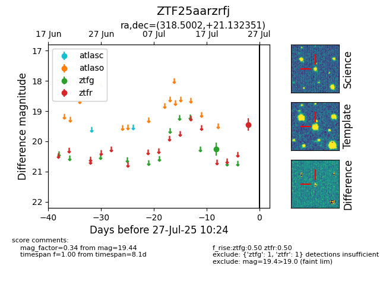

Target ZTF25aarzrfj at 2025-07-27 10:24, see:
FINK: fink-portal.org/ZTF25aarzrfj
Lasair: lasair-ztf.lsst.ac.uk/objects/ZTF25aarzrfj
ALeRCE: alerce.online/object/ZTF25aarzrfj
alt names
ZTF25aarzrfj (ztf,fink)
coordinates:
equatorial (ra, dec) = (318.5002,+21.13235)
galactic (l, b) = (69.8100,-18.62229)
photometry
last ztfg=20.26, ztfr=19.44
1 ztfg, 1 ztfr detections
